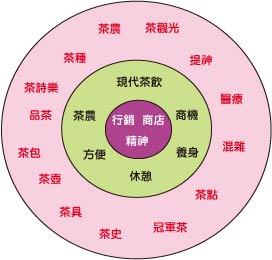
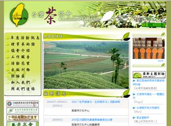
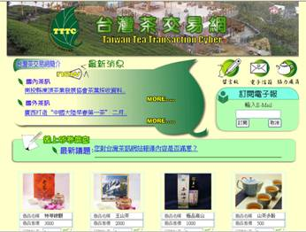
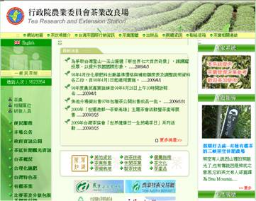
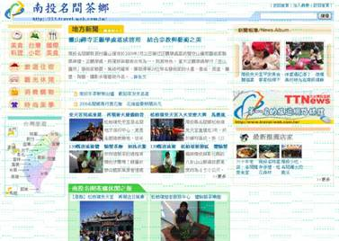
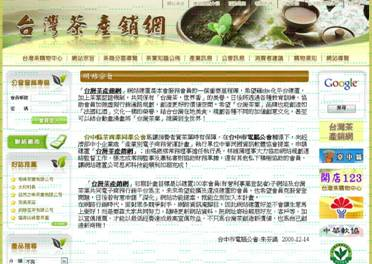
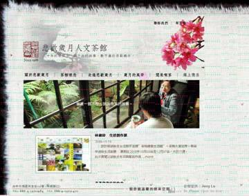
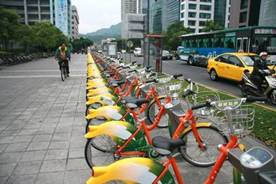

1.根據現況分析後，進行討論，列出改善現況的選項
2.專題方面,互動式硬體方面先別考慮，先聚焦在內容，"放在互動式硬體裡面的的內容"
－－－－－－－－－－－－－－－－－－－－－－－－－－－－－－－－－－－－－
下周內容
一、前言
...
...
因此本專題主要
１.進行茶文化意涵探討
２.現有茶網站特色分析
３....？？？
４.彙編歸納建置茶網站的發展原則
５.依據此原則建置創意茶互動學習內容網
上網參考：APA 網頁格式
1.主題發想

主題收斂

贊訂命名為 C.S.S,還會修改此名稱
2. 主題：台灣茶文化互動式學習與推廣
前言修改 ----孟宜
文獻探討
a.進行茶文化意涵探討-何謂台灣茶文化------煥鈞,逸賢
b.現有茶網站特色分析-網站現況分析--------孟宜,雅雯
創新應用科技---------孟宜,雅雯
彙編---佳樺
3.4/19(日)阿里山考茶遊
相關資訊
樹湖觀光茶園(太和社區-太和綜合觀光農園)
一品茶業渡假村
碧湖觀光茶園
------------------------
阿里山瑞里茶區-幼林茶行-幼林大飯店
石桌茶區
頂湖茶區
---------------
茗園茶葉民宿
王鼎茶園
皆平日假日價差大
一、前言
臺灣的特殊地理環境與豐富多元的歷史背景，使得國內擁有許多特有的文化與產物，就像是一塊海綿，歷來自發或被動地不斷吸納各種外來文化。茶是我國傳統飲料，更是臺灣重要經濟作物之一，依據林鼎盛(民96年，7月)在「新式台灣茶飲的社會學分析」一文中指出，「全球性文化商品透過全球化企業的運作，挾帶著它們的文化進入現今的臺灣社會，漸漸改變台灣人的飲食習慣；那些商品包含咖啡、紅酒、速食等等，例如星巴克咖啡（Starbucks Coffee）嘗試灌輸消費者的思想：精品咖啡，以『上咖啡館』作為有閒階級的代表，除了咖啡本身，還帶來一種新生活風格型態。然而，當我們的焦點集中在全球性消費文化，往往會忽略了在台灣，茶的飲用是一項極為重要的消費現象。」
臺灣茶之發展，除了具形的經濟產業的實質意義外，在無形的文化教育與提昇整個社會的人文素養與品質，也扮演相當重要的功能性角色。在日常生活中，茶扮演不可或缺的飲品，對我們而言，茶是日常飲料，更是平日休閒時的必需品。台灣茶飲的獨特性在於，台灣茶飲文化是種「混雜」的文化，它是多種風格的混合，茶館的設計中，往往交雜各種不同文化的元素，餐點與茶飲形式也混入各種不同國家的飲食(林鼎盛，民96)。臺灣的茶飲消費如高田公理(1992)《遊戲化社會》中所提，高度經濟發展後，人們不再渴求制度化或教條式生活，他們要求具有附加價值的歡愉，更重視嗅覺、味覺、觸覺的感官；生活上，他們重視文化與藝術，強調藝術與經濟結合，並且讓文化走入民眾生活。飲食上，他們要求意想不到的趣味，在美食上花費更多心思，情調比好吃重要，換言之，現在去餐廳已經不只是好吃，更要吃氣氛、吃服務、吃趣味。臺灣人不在意混入何種異國的風格，對於如此混雜的選項沒有感到任何的不協調，似乎已經習慣這種拼湊。因為飲食習慣的改變，讓臺灣茶飲逐漸地消失其特色。依據邱念渠(民94年，1月)在「台灣茶葉產業的演進過程與發展困境」一文中指出，台灣茶業常久以來模模糊糊的販賣歷史傳統、販賣神話、販賣消費的虛榮以及似有若無的文化傳承，原先的概念已因時間的流逝而顯得老朽斑駁，也造成了年輕消費群對於台灣茶葉的漠視。臺灣茶是我國的特有文化，如何運用創意，提升國人對臺灣茶文化的認識與重視，並活躍於國際間，使臺灣茶有一個不同的未來是值得探討與研究的議題。
現今資訊發達，是個數位化的時代。依據林昇廣(民97年，6月)在「整合三軸加速度計和藍芽應用於桌球虛擬實境遊戲之研究」引用Burdea對虛擬實境的定義，「虛擬實境是一種連接使用者與機器的界面，能讓使用者透過多種感官途徑（sensorial channel）與虛擬環境產生即時的互動」藉由虛擬實境讓使用者與機器產生互動，可滿足使用者在感官上的需求。虛擬實境在未來的使用趨勢，將朝向提供一個具有情境，互動與融入性的操作環境。同時也因資訊科技進步，發達，使得全球資訊網的虛擬實境有揮灑的空間(鄭光成，民89)。本專題研究將運用虛擬實境結合運用推廣台灣茶文化。其目的以互動式虛擬實境電子書結合茶館之研究。在現今茶館當中，鮮有茶館與數位結合。而本專題研究將以互動式虛擬實境電子書來呈現於茶館當中。因此，我們希望藉由製作專題的機會，利用數位與創意的結合，讓臺灣人在喝茶的同時又能兼具體會茶飲帶來的精神與道德氣息，讓臺灣茶文化更進一步的提升與推廣。
文獻參考
林鼎盛（2007）．「新式台灣茶飲的社會學分析」．花蓮教育大學社會發展研究所。
邱念渠（2005）．「台灣茶葉產業的演進過程與發展困境」．清華大學工業工程與工程管理研究所。
鄭光成（2000）．虛擬實境中依使用者需求之預取架構．大葉大學資訊管理研究所。
林昇廣（2008）．整合三軸加速度計和藍芽應用於桌球虛擬實境遊戲之研究．大同大學機械工程研究所。
二、茶文化意涵探討
何謂台灣茶文化－臺灣茶的起源
茶葉在台灣，原本是沒經濟價值的野生植物。經由個個專業人員，茶農、製茶師和茶商等，漸漸地在世界的舞台展露頭角。早期茶葉在台灣作為藥方，因地形處高山，又地處偏僻，採摘不太容易，畏懼原著民阻擾。直至通事與原住民訂議時間進入山區焙製茶葉。供應人們泡茶需要。由於漢人移民，之後多由中國大陸輸進台灣。便將茶種移入台灣試種。往後台灣大量生產茶葉並外銷世界。
日據時期台灣茶葉製作以烏龍茶、包種茶和紅茶為中心。多樣化和精緻化
致使茶的種類增多，培養更多台灣特色茶。例如:文山包種茶、木柵鐵觀音和鹿谷凍頂烏龍等產品。
品種和栽培方法的促進和製茶技術的進步，使臺灣茶在貿易輸出上，更是
一大發展成就。
參考資料
臺灣茶文化之旅 張明雄 (民93) 前衛出版
茶文化的內涵茶文化是中華傳統優秀文化的組成部分，其內容十分豐富，涉及科技教育、文化藝術、醫學保健、歷史考古、經濟貿易、餐飲旅遊和新聞出版等學科與行業，包含茶葉專著、茶葉期刊、茶與詩詞、茶與歌舞、茶與小說、茶與美術、茶與婚禮、茶與祭祀、茶與禪教、茶與楹聯、茶與諺語、茶事掌故、茶與故事、飲茶習俗、茶藝表演、陶瓷茶具、茶館茶樓、衝泡技藝、茶食茶療、茶事博覽和茶事旅遊等廿一個方面。
參考資料
論中國的茶文化
http://big5.xinhuanet.com/gate/big5/www.ha.xinhuanet.com/fuwu/yinshi/2006-09/13/content_8000808.htm (09/04/02)
三、現有茶網站特色分析-網站現況分析
由網路資源分析
優點：
缺點：
|
|
優點：
缺點：
|
|
優點：
缺點：
|
|
優點：
缺點：
|
|
 |
優點：
缺點：
|
 |
優點：
缺點：
|
優點：
缺點：
|
|
|
優點：
缺點：
|
 |
優點：
缺點：
|
優點：
缺點：
|
|
 |
優點：
缺點：
|
 |
優點：
缺點：
|
 |
優點：
缺點：
|
社群網站好好玩－奧多比與Facebook聯手打造新應用程式
社群網站成長快速，人氣引來無窮商機，遊戲應用軟體搶先一步進駐是成功的例子。為了讓使用者有更豐富的應用體驗，全球軟體大廠奧多比2日宣佈與 Facebook合作，雙方將共同透過 Adobe Flash及Facebook平台，運用嶄新開放源碼技術，為網頁開發人員提供更具競爭力的應用程式設計環境。
奧多比指出，全新ActionScript 3.0 Client Library for Facebook 平台是一項免費開放源碼程式語言函式庫，受到奧多比及Facebook雙方共同正式官方支援。該函式庫擁有完整的程式開發資源，能夠支援Facebook應用程式介面（API），包括 Facebook Connect。這些資源能立即協助開發人員運用Adobe Flash與Flex軟體，以及Facebook平台展開豐富型應用程式（Rich Application）設計工作。
Playfish 公司執行長暨共同創辦人Sebastien de Halleux說，自2007年以來，Playfish 就開始大量運用 Facebook 平台及 Flash 平台製作有趣並極具吸引力的社交遊戲，這些遊戲廣受全球超過六千萬名註冊用戶的喜愛。
他說，相信社交網路將成為未來最重要的遊戲平台之一，奧多比與Facebook的合作宣佈勢必能為業界帶來更為社交化及視覺化的開發效能，大幅提升製作體驗。
ActionScript 3.0 Client Library for Facebook 平台已經推出，即日起提供免費下載，開發人員可以透過http://www.adobe.com/devnet/facebook 取得相關開發資源及說明文件。
資料來源：http://tw.news.yahoo.com/article/url/d/a/090403/17/1h76f.html
平面有彈性的喇叭讓牆壁也可發聲
這種新的喇叭比0.25公釐還薄，能夠像畫一樣掛在牆壁上，可在旅客大廳進行廣播的任務。
由於該型喇叭是這麼地輕薄且具備彈性，工程師表示，這款喇叭喇可以放到天花板、汽車裡面，像是壁紙、車椅都有可能變成具備喇叭的玩意兒。
此喇叭是英國Warwick大學分出去的公司Warwick Audio Technologies所研究出來的。工程師指出，這種喇叭適合放在公共空間的原因是，其可傳送具備平坦，具備方向性的聲波，能夠比傳統喇叭傳得更遠。
資料來源：http://taiwan.cnet.com/crave/0,2000088746,20137255,00.htm
微笑單車簡單體驗

目前租借需要一張悠遊卡和一張有IC晶片的信用卡，透過旁邊的kiosk資訊服務站開啟短期卡（一日或五日），目前申請都不需要付費，未來則是一日卡40元，五日卡150元。長期卡則是可以選擇季費、半年費和年費。
在kiosk開完卡，插入信用卡作預繳押金（預授權但不扣款），就可以用那張悠遊卡去選你喜歡的車了。
腳踏車菜籃下方有簡易的鎖，可以讓你臨時把車前輪鎖住，鑰匙拔起來放拿走即可上鎖。
資料來源：http://taiwan.cnet.com/crave/0,2000088746,20137260,00.htm
Dell新款All-in-One桌上型PC，可以觸控了
Dell的消費性產品資深副總裁Alex Gruzen表示，有了觸控式螢幕，Dell希望消費者能夠把這樣的電腦當成可在廚房、客廳、起居室等地使用的「家庭電腦」(family PC)。他進一步強調，這是個好機會，父母有機會再一次看到小孩究竟在電腦上會做什麼。
資料來源：http://taiwan.cnet.com/crave/0,2000088746,20136871,00.htm
a.進行茶文化意涵探討-何謂台灣茶文化------煥鈞,逸賢
b.現有茶網站特色分析-網站現況分析--------孟宜,雅雯
創新應用科技---------孟宜,雅雯
彙編---佳樺